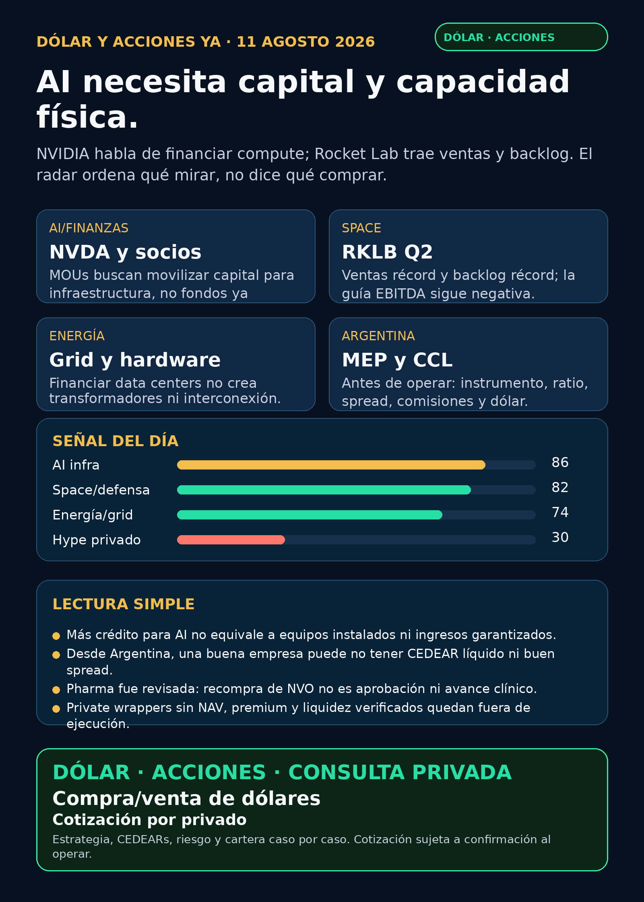

AI necesita capital y capacidad física.
NVIDIA habla de financiar compute; Rocket Lab trae ventas y backlog. El radar ordena qué mirar, no dice qué comprar.

Lectura simple
AI ya no es sólo chips: data centers, red eléctrica y activos físicos necesitan crédito y capital paciente. El anuncio de NVIDIA busca movilizar más de USD 500.000 millones de terceros a lo largo del tiempo; no prueba capital ya invertido ni ingresos garantizados.
Rocket Lab reportó Q2 2026 con revenue récord de USD 234 millones (+62% interanual), backlog récord de USD 2.360 millones (+137%) y guía Q3 de USD 250–265 millones. La guía EBITDA Q3 sigue negativa.
Señales de radar — no recomendación de compra
Argentina: dólar e instrumento
Referencias públicas 11:45–11:53 Mendoza: MEP AL30 24hs $1.521,76, CCL AL30 24hs $1.581,53; BlueLytics: blue compra/venta $1.502/$1.535 y oficial $1.469/$1.520. No son precio ejecutable de broker.
Un CEDEAR no es simplemente “la acción de afuera”: mezclan subyacente USD, CCL implícito, ratio, spread, volumen y comisiones. Buena empresa ≠ buena inversión al precio actual ≠ buen instrumento local.
Cobertura revisada
- AI infra y watchlist base: NVDA, TSM, MU, GOOGL, ASML, PLTR, AAPL, HOOD, TSLA.
- Energía/power global y Argentina: CEG, NEE, VST, GEV, ETN, PWR, VRT, MOD, PAM/PAMP, YPF, TGS, VIST, CEPU.
- Pharma/GLP-1: LLY, NVO, PFE, MRK, AMGN, AZN; sin nueva aprobación primaria.
- Defensa/aeroespacial, autonomía, crypto gobernado y wrappers privados: revisados; sin señal primaria superior a RKLB/NVDA.
Dólar · Acciones · Consulta privada
Compra/venta de dólares e inversiones: escribime por privado. Cotización sujeta a confirmación al momento de operar.
No es asesoramiento financiero; es research para decisión humana.